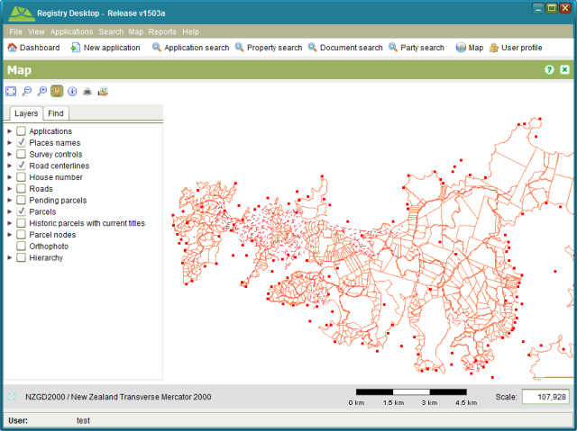

The Registry Map Viewer allows you to navigate and interact with the geospatial data managed
by SOLA. It can be accessed from the Map >  Map menu or selecting
Map menu or selecting Map.
Map.

SOLA Map Viewer
The SOLA Map Viewer includes a toolbar for navigating and querying the map as well as two tabs; Layers and Find. The Layers tab can be used to control the geospatial data displayed on the map while the Find tab that can be used to quickly locate parcels and other geospatial features in the map.